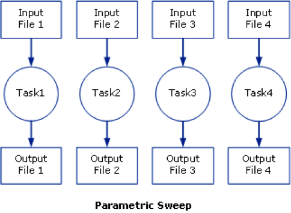
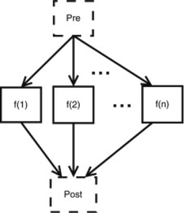

Multi-job submission#
A frequent occurring characteristic of scientific computation is their focus on data intensive processing. A typical example is the iterative evaluation of a program over different input parameter values, often referred to as a "parameter sweep". A Parameter Sweep runs a job a specified number of times, as if we sweep the parameter values through a user defined range.
Users then often want to submit a large numbers of jobs based on the same job script but with (i) slightly different parameters settings or with (ii) different input files.
These parameter values can have many forms, we can think about a range (e.g., from 1 to 100), or the parameters can be stored line by line in a comma-separated file. The users want to run their job once for each instance of the parameter values.
One option could be to launch a lot of separate individual small jobs (one for each parameter) on the cluster, but this is not a good idea. The cluster scheduler isn't meant to deal with tons of small jobs. Those huge amounts of small jobs will create a lot of overhead, and can slow down the whole cluster. It would be better to bundle those jobs in larger sets. In TORQUE, an experimental feature known as "job arrays" existed to allow the creation of multiple jobs with one qsub command, but is not supported by Moab, the current scheduler.
The "Worker framework" has been developed to address this issue.
It can handle many small jobs determined by:
- parameter variations
-
i.e., many small jobs determined by a specific parameter set which is stored in a .csv (comma separated value) input file.
- job arrays
-
i.e., each individual job got a unique numeric identifier.
Both use cases often have a common root: the user wants to run a program with a large number of parameter settings, and the program does not allow for aggregation, i.e., it has to be run once for each instance of the parameter values.
However, the Worker Framework's scope is wider: it can be used for any scenario that can be reduced to a MapReduce approach.1
The worker Framework: Parameter Sweeps#
First go to the right directory:
$ cd ~/examples/Multi-job-submission/par_sweepSuppose the user wishes to run the "weather" program, which takes three parameters: a temperature, a pressure and a volume. A typical call of the program looks like:
$ ./weather -t 20 -p 1.05 -v 4.3
T: 20 P: 1.05 V: 4.3For the purpose of this exercise, the weather program is just a simple bash script, which prints the 3 variables to the standard output and waits a bit:
par_sweep/weather
#!/bin/bash
# Here you could do your calculations
echo "T: $2 P: $4 V: $6"
sleep 100
A job script that would run this as a job for the first parameters (p01) would then look like:
par_sweep/weather_p01.pbs
#!/bin/bash
#PBS -l nodes=1:ppn=8
#PBS -l walltime=01:00:00
cd $PBS_O_WORKDIR
./weather -t 20 -p 1.05 -v 4.3
When submitting this job, the calculation is performed or this particular instance of the parameters, i.e., temperature = 20, pressure = 1.05, and volume = 4.3.
To submit the job, the user would use:
$ qsub weather_p01.pbsHowever, the user wants to run this program for many parameter instances, e.g., he wants to run the program on 100 instances of temperature, pressure and volume. The 100 parameter instances can be stored in a comma separated value file (.csv) that can be generated using a spreadsheet program such as Microsoft Excel or RDBMS or just by hand using any text editor (do not use a word processor such as Microsoft Word). The first few lines of the file "data.csv" would look like:
$ more data.csv
temperature, pressure, volume
293, 1.0e5, 107
294, 1.0e5, 106
295, 1.0e5, 105
296, 1.0e5, 104
297, 1.0e5, 103
...It has to contain the names of the variables on the first line, followed by 100 parameter instances in the current example.
In order to make our PBS generic, the PBS file can be modified as follows:
par_sweep/weather.pbs
#!/bin/bash
#PBS -l nodes=1:ppn=8
#PBS -l walltime=04:00:00
cd $PBS_O_WORKDIR
./weather -t $temperature -p $pressure -v $volume
# # This script is submitted to the cluster with the following 2 commands:
# module load worker/1.6.12-foss-2021b
# wsub -data data.csv -batch weather.pbs
Note that:
-
the parameter values 20, 1.05, 4.3 have been replaced by variables $temperature, $pressure and $volume respectively, which were being specified on the first line of the "data.csv" file;
-
the number of processors per node has been increased to 8 (i.e., ppn=1 is replaced by ppn=8);
-
the walltime has been increased to 4 hours (i.e., walltime=00:15:00 is replaced by walltime=04:00:00).
The walltime is calculated as follows: one calculation takes 15 minutes, so 100 calculations take 1500 minutes on one CPU. However, this job will use 8 CPUs, so the 100 calculations will be done in 1500/8 = 187.5 minutes, i.e., 4 hours to be on the safe side.
The job can now be submitted as follows (to check which worker module
to use, see subsection Using explicit version numbers):
$ module load worker/1.6.12-foss-2021b
$ wsub -batch weather.pbs -data data.csv
total number of work items: 41
433253.leibnizNote that the PBS file is the value of the -batch option. The weather program will now be run for all 100 parameter instances -- 8 concurrently -- until all computations are done. A computation for such a parameter instance is called a work item in Worker parlance.
Warning
When you attempt to submit a worker job on a non-default cluster, you might encounter an Illegal instruction error. In such cases, the solution is to use a different module swap command. For example, to submit a worker job to the donphan debug cluster from the login nodes, use:
$ module swap env/slurm/donphan
$ module swap cluster/donphan module swap cluster command after submitting the jobs. Additional information about this as well as more comprehensive details concerning the 'Illegal instruction' error can be accessed here.
The Worker framework: Job arrays#
First go to the right directory:
$ cd ~/examples/Multi-job-submission/job_arrayAs a simple example, assume you have a serial program called myprog that you want to run on various input files input[1-100].

The following bash script would submit these jobs all one by one:
#!/bin/bash
for i in `seq 1 100`; do
qsub -o output $i -i input $i myprog.pbs
done
This, as said before, could be disturbing for the job scheduler.
Alternatively, TORQUE provides a feature known as job arrays which allows the creation of multiple, similar jobs with only one qsub command. This feature introduced a new job naming convention that allows users either to reference the entire set of jobs as a unit or to reference one particular job from the set.
Under TORQUE, the -t range option is used with qsub to specify a job array, where range is a range of numbers (e.g., 1-100 or 2,4-5,7).
The details are
-
a job is submitted for each number in the range;
-
individuals jobs are referenced as jobid-number, and the entire array can be referenced as jobid for easy killing etc.; and
-
each job has PBS_ARRAYID set to its number which allows the script/program to specialise for that job
The job could have been submitted using:
$ qsub -t 1-100 my_prog.pbsThe effect was that rather than 1 job, the user would actually submit 100 jobs to the queue system. This was a popular feature of TORQUE, but as this technique puts quite a burden on the scheduler, it is not supported by Moab (the current job scheduler).
To support those users who used the feature and since it offers a convenient workflow, the "worker framework" implements the idea of "job arrays" in its own way.
A typical job script for use with job arrays would look like this:
job_array/job_array.pbs
#!/bin/bash -l
#PBS -l nodes=1:ppn=1
#PBS -l walltime=00:15:00
cd $PBS_O_WORKDIR
INPUT_FILE="input_${PBS_ARRAYID}.dat"
OUTPUT_FILE="output_${PBS_ARRAYID}.dat"
my_prog -input ${INPUT_FILE} -output ${OUTPUT_FILE}
In our specific example, we have prefabricated 100 input files in the "./input" subdirectory. Each of those files contains a number of parameters for the "test_set" program, which will perform some tests with those parameters.
Input for the program is stored in files with names such as input_1.dat, input_2.dat, ..., input_100.dat in the ./input subdirectory.
$ ls ./input
...
$ more ./input/input_99.dat
This is input file \#99
Parameter #1 = 99
Parameter #2 = 25.67
Parameter #3 = Batch
Parameter #4 = 0x562867For the sole purpose of this exercise, we have provided a short "test_set" program, which reads the "input" files and just copies them into a corresponding output file. We even add a few lines to each output file. The corresponding output computed by our "test_set" program will be written to the "./output" directory in output_1.dat, output_2.dat, ..., output_100.dat. files.
job_array/test_set
#!/bin/bash
# Check if the output Directory exists
if [ ! -d "./output" ] ; then
mkdir ./output
fi
# Here you could do your calculations...
echo "This is Job_array #" $1
echo "Input File : " $3
echo "Output File: " $5
cat ./input/$3 | sed -e "s/input/output/g" | grep -v "Parameter" > ./output/$5
echo "Calculations done, no results" >> ./output/$5
Using the "worker framework", a feature akin to job arrays can be used with minimal modifications to the job script:
job_array/test_set.pbs
#!/bin/bash -l
#PBS -l nodes=1:ppn=8
#PBS -l walltime=04:00:00
cd $PBS_O_WORKDIR
INPUT_FILE="input_${PBS_ARRAYID}.dat"
OUTPUT_FILE="output_${PBS_ARRAYID}.dat"
./test_set ${PBS_ARRAYID} -input ${INPUT_FILE} -output ${OUTPUT_FILE}
Note that
-
the number of CPUs is increased to 8 (ppn=1 is replaced by ppn=8); and
-
the walltime has been modified (walltime=00:15:00 is replaced by walltime=04:00:00).
The job is now submitted as follows:
$ module load worker/1.6.12-foss-2021b
$ wsub -t 1-100 -batch test_set.pbs
total number of work items: 100
433253.leibnizThe "test_set" program will now be run for all 100 input files -- 8 concurrently -- until all computations are done. Again, a computation for an individual input file, or, equivalently, an array id, is called a work item in Worker speak.
Note that in contrast to TORQUE job arrays, a worker job array only submits a single job.
$ qstat
Job id Name User Time Use S Queue
--------------- ------------- --------- ---- ----- - -----
433253.leibniz test_set.pbs vsc20167 0 Q
And you can now check the generated output files:
$ more ./output/output_99.dat
This is output file #99
Calculations done, no results
MapReduce: prologues and epilogue#
Often, an embarrassingly parallel computation can be abstracted to three simple steps:
-
a preparation phase in which the data is split up into smaller, more manageable chunks;
-
on these chunks, the same algorithm is applied independently (these are the work items); and
-
the results of the computations on those chunks are aggregated into, e.g., a statistical description of some sort.

The Worker framework directly supports this scenario by using a prologue (pre-processing) and an epilogue (post-processing). The former is executed just once before work is started on the work items, the latter is executed just once after the work on all work items has finished. Technically, the master, i.e., the process that is responsible for dispatching work and logging progress, executes the prologue and epilogue.
$ cd ~/examples/Multi-job-submission/map_reduceThe script "pre.sh" prepares the data by creating 100 different input-files, and the script "post.sh" aggregates (concatenates) the data.
First study the scripts:
map_reduce/pre.sh
#!/bin/bash
# Check if the input Directory exists
if [ ! -d "./input" ] ; then
mkdir ./input
fi
# Just generate all dummy input files
for i in {1..100};
do
echo "This is input file #$i" > ./input/input_$i.dat
echo "Parameter #1 = $i" >> ./input/input_$i.dat
echo "Parameter #2 = 25.67" >> ./input/input_$i.dat
echo "Parameter #3 = Batch" >> ./input/input_$i.dat
echo "Parameter #4 = 0x562867" >> ./input/input_$i.dat
done
map_reduce/post.sh
#!/bin/bash
# Check if the input Directory exists
if [ ! -d "./output" ] ; then
echo "The output directory does not exist!"
exit
fi
# Just concatenate all output files
touch all_output.txt
for i in {1..100};
do
cat ./output/output_$i.dat >> all_output.txt
done
Then one can submit a MapReduce style job as follows:
$ wsub -prolog pre.sh -batch test_set.pbs -epilog post.sh -t 1-100
total number of work items: 100
433253.leibniz
$ cat all_output.txt
...
$ rm -r -f ./output/Note that the time taken for executing the prologue and the epilogue should be added to the job's total walltime.
Some more on the Worker Framework#
Using Worker efficiently#
The "Worker Framework" is implemented using MPI, so it is not restricted to a single compute nodes, it scales well to multiple nodes. However, remember that jobs requesting a large number of nodes typically spend quite some time in the queue.
The "Worker Framework" will be effective when
-
work items, i.e., individual computations, are neither too short, nor too long (i.e., from a few minutes to a few hours); and,
-
when the number of work items is larger than the number of CPUs involved in the job (e.g., more than 30 for 8 CPUs).
Monitoring a worker job#
Since a Worker job will typically run for several hours, it may be
reassuring to monitor its progress. Worker keeps a log of its activity
in the directory where the job was submitted. The log's name is derived
from the job's name and the job's ID, i.e., it has the form
<jobname>.log<jobid>. For the running example, this could be
run.pbs.log433253.leibniz, assuming the job's ID is 433253.leibniz. To keep an eye on the
progress, one can use:
$ tail -f run.pbs.log433253.leibnizAlternatively, wsummarize, a Worker command that summarises a log
file, can be used:
$ watch -n 60 wsummarize run.pbs.log433253.leibnizThis will summarise the log file every 60 seconds.
Time limits for work items#
Sometimes, the execution of a work item takes longer than expected, or worse, some work items get stuck in an infinite loop. This situation is unfortunate, since it implies that work items that could successfully execute are not even started. Again, the Worker framework offers a simple and yet versatile solution. If we want to limit the execution of each work item to at most 20 minutes, this can be accomplished by modifying the script of the running example.
#!/bin/bash -l
#PBS -l nodes=1:ppn=8
#PBS -l walltime=04:00:00
module load timedrun/1.0
cd $PBS_O_WORKDIR
timedrun -t 00:20:00 weather -t $temperature -p $pressure -v $volume
Note that it is trivial to set individual time constraints for work items by introducing a parameter, and including the values of the latter in the CSV file, along with those for the temperature, pressure and volume.
Also note that "timedrun" is in fact offered in a module of its own, so it can be used outside the Worker framework as well.
Resuming a Worker job#
Unfortunately, walltime is sometimes underestimated. When using the Worker framework, this implies that not all work items will have been processed. Worker makes it very easy to resume such a job without having to figure out which work items did complete successfully, and which remain to be computed. Suppose the job that did not complete all its work items had ID "445948".
$ wresume -jobid 433253.leibnizThis will submit a new job that will start to work on the work items that were not done yet. Note that it is possible to change almost all job parameters when resuming, specifically the requested resources such as the number of cores and the walltime.
$ wresume -l walltime=1:30:00 -jobid 433253.leibniz}Work items may fail to complete successfully for a variety of reasons, e.g., a data file that is missing, a (minor) programming error, etc. Upon resuming a job, the work items that failed are considered to be done, so resuming a job will only execute work items that did not terminate either successfully, or reporting a failure. It is also possible to retry work items that failed (preferably after the glitch why they failed was fixed).
$ wresume -jobid 433253.leibniz -retryBy default, a job's prologue is not executed when it is resumed, while its epilogue is. "wresume" has options to modify this default behaviour.
Further information#
This how-to introduces only Worker's basic features. The wsub command has some usage information that is printed when the -help option is specified:
$ wsub -help
### usage: wsub -batch <batch-file>
# [-data <data-files>]
# [-prolog <prolog-file>]
# [-epilog <epilog-file>]
# [-log <log-file>]
# [-mpiverbose]
# [-dryrun] [-verbose]
# [-quiet] [-help]
# [-t <array-req>]
# [<pbs-qsub-options>]
#
# -batch <batch-file> : batch file template, containing variables to be
# replaced with data from the data file(s) or the
# PBS array request option
# -data <data-files> : comma-separated list of data files (default CSV
# files) used to provide the data for the work
# items
# -prolog <prolog-file> : prolog script to be executed before any of the
# work items are executed
# -epilog <epilog-file> : epilog script to be executed after all the work
# items are executed
# -mpiverbose : pass verbose flag to the underlying MPI program
# -verbose : feedback information is written to standard error
# -dryrun : run without actually submitting the job, useful
# -quiet : don't show information
# -help : print this help message
# -t <array-req> : qsub's PBS array request options, e.g., 1-10
# <pbs-qsub-options> : options passed on to the queue submission
# command
Troubleshooting#
Error: An ORTE daemon has unexpectedly failed after launch and before communicating back to mpirun#
When submitting a Worker job, you might encounter the following error:
An ORTE daemon has unexpectedly failed after launch and before communicating back to mpirun.
This error can occur when the foss toolchain version of worker is loaded. Instead, try loading an iimpi toolchain version of worker.
to check for the available versions of worker, use the following command:
$ module avail worker
-
MapReduce: 'Map' refers to the map pattern in which every item in a collection is mapped onto a new value by applying a given function, while "reduce" refers to the reduction pattern which condenses or reduces a collection of previously computed results to a single value. ↩